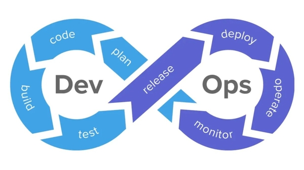

- 00 开篇词 可观测性，让开发和维护系统的你每晚都能睡个好觉！.md.html
- 01 以史鉴今：监控是如何一步步发展而来的？.md.html
- 02 基本概念：指标+日志+链路追踪=可观测性？.md.html
- 03 相互对比：可观测性和传统监控有什么区别？.md.html
- 04 OpenTelemetry：如何利用OpenTelemetry采集可观测数据？.md.html
- 05 构建可观测平台：应该购买商业产品还是自己搭建？.md.html
- 06 团队合作：不同团队如何高效共建可观测性？.md.html
- 07 软件开发：如何利用可观测性进行驱动？.md.html
- 08 建立 SLO：如何为系统可靠性的量化提供依据？.md.html
- 09 跟踪 SLO：如何基于错误预算采取行动？.md.html
- 10 实战 1：从 0 到 1 建立系统应用的可观测性.md.html
- 11 实战 2：基于可观测性数据进行问题分析和根因定位.md.html
- 12 实战 3：构建基于 Kubernetes 的系统可观测性.md.html
- 13 实战 4：建立软件持续集成和发布的可观测性.md.html
- 14 文化建设：如何构建可观测性的文化和框架_.md.html
- 15 展望未来：可观测性在未来的发展趋势是什么？.md.html
- 结束语 在实践中，用科学的方法分析和解决问题.md.html
- 捐赠
06 团队合作：不同团队如何高效共建可观测性？
你好，我是翁一磊。
通过前面几节课的学习，相信你对可观测性已经有了初步的了解。从这一讲开始，我们进入实战篇。作为这个模块的第一篇文章，我们会重点讨论可观测与云原生、DevOps 和 SRE 之间的关系，然后聊聊如果想要建立和实施系统的可观测性，开发、测试和运维团队应该从哪些方面着手。
云原生
云原生这个词相信你已经看到、听到过很多次了，对于这个词，你一定多少有一些自己的理解。云原生架构和技术是一种方法，它用于设计、构建和管理用云计算模型搭建的工作负载。
让我们来看一下云原生计算基金会提供的标准定义：
云原生技术使组织能够在公有云、私有云和混合云等现代动态环境中构建和运行可扩展的应用程序。容器、服务网格、微服务、不可变基础设施和声明式 API 就是这种方法的例证。这些技术支持具有弹性、可管理和可观测的松散耦合系统。结合强大的自动化功能，它们使工程师能够以最少的工作量频繁且可预测地进行高影响力的更改。
所以说，云原生是注重速度和敏捷性的。
在这一背景之下，不难想象，在未来，更多的应用程序会运行在云上，会使用容器技术和微服务。业务系统正在逐渐演变为提高业务速度、促进业务增长的战略转型武器。我们必须快速将新想法和新功能推向市场。
与此同时，业务系统也变得越来越复杂，用户的要求也越来越高：他们期望快速的响应，创新的功能以及零宕机时间。性能问题、反复出现的错误和缓慢的行动是用户无法容忍的，他们很可能会转向友商。这也意味着，应用软件的开发和运维方式需要进行转变，这就迎来了 DevOps 的飞速发展。
DevOps
DevOps 实际上就是 Dev 和 Ops 的组合。Dev 指的是开发，Ops 指的是运维。DevOps 强调的是开发和运维的协作，因为在应用开发和上线的流程中，开发和运维是最重要的两个角色。
应用软件开发最重要目的是将新功能交付给最终用户使用。这些产品往往是从一个想法开始的，然后产品经理开始规划产品的功能，编写需求说明书，接着经过开发、测试、打包以及部署环节后，产品最终上线。
但并不是说应用上线之后就万事大吉了。用户的使用体验如何，有没有 Bug，应用能不能承载大量的用户负载，这些都是需要考虑和持续追踪的问题。另一方面，随着用户的使用和业务的发展，应用软件需要不断地优化性能，并增加一些新的功能。
如果沿用传统模式来实现这个过程，开发和运维会各司其职，甚至会产生一些对立。但是到了云原生的快速发展时代，快速发布和上线应用的需求会让这种模式遇到一些挑战。下面这些方面都会影响到上线的速度。
- 团队之间缺乏沟通和协作，比如说缺乏有关部署的文档，或者应用的版本有很多问题，这会导致部署不顺利，周期延长。
- 开发和运维各自有各自的工作职责，开发主要负责新功能的实现，而运维需要保障生产环境的可靠性，因此一个关注速度，另一个关注的是稳定。
- 应用上线之前，也需要测试的介入，包括单元测试、集成测试、系统测试等等，如果测试发现问题，需要开发人员修改和调整。
- 人工的任务，比如一些需要手工介入的步骤以及配置，这些人工的任务往往容易出错，难以追踪，并且难以将知识和积累共享给其他人。
在云原生时代，开发和运维本质上有着共同的目标，也就是更快速地为最终用户交付高质量的应用。DevOps 就是为了移除实现这个目标的路上的阻碍而诞生的。需要指出的是，DevOps 并不是指使用特定的工具，而是一个文化、最佳实践和工具的集合，这其中也包括了你可能已经很熟悉的持续集成（Continuous Integration，即 CI）和持续发布（Continuous Delivery，即 CD）。
从技术层面讲，DevOps 是实现从代码、构建、测试到部署等的全流程自动化流水线，从软件开发全生命周期的角度出发，它致力于解决前面所说的那些影响软件发布和上线的因素，优化研发流程、提高研发效率和产品质量，从而最终提升用户使用产品的满意度，帮助业务发展。

SRE
另外一个常见的概念是SRE，也就是 System Reliability Engineering，也可以指 Site Reliability Engineering，是类似的含义。如果要做个对比的话，DevOps 在一个较高的维度（High level）定义了要实现自动化、流线型的应用发布流程应该去做什么，而 SRE 则更加关注具体如何实施和实现 DevOps 的规则和流程。
SRE 中的系统（System）实际上是指运行应用程序时所有相关的组件，包括服务器、网络、数据库等等。而可靠性（Reliability）是指应用能够为最终用户提供高质量的服务。可靠性如果丢失（例如用户无法访问，或者无法使用相关的功能），会直接带来收益上的损失。而要相对准确地衡量可靠性状态，则需要定义 SLO（Service Level Objective），也就是服务水平目标，通过定义出需要关联的重要指标 SLI（Service Level Indicator），明确和追踪 SLO 的情况。关于SLO ，在后面的第 8 讲我们还会详细介绍。
而为了实现 SRE，一个很重要的实践就是需要提升整体项目的工程化水平，减少传统运维的行为，尤其是那些手工的、重复的、为了临时解决一个问题而进行的工作（在谷歌 SRE 书籍里面，这些称为 Toil，可以翻译为琐事，或者直接称为挫事）。而让团队中所有的成员开始有效地使用工具，同时减少人为干预，提升自动化，是一个很好的开始。
如果你想进一步学习和了解 SRE，极客时间里也有很好的相关课程。
团队协作，构建可观测性
实施 SRE 工程，守护系统的可靠性是一个⻓期的工作，需要开发、测试、运维以及 SRE 整个团队的努力。而可观测性平台天生就是为 SRE 工程服务的，它致力于实现 SLO 目标。建立可观测性不仅仅是运维团队的事情，更是整个开发、测试以及 SRE 团队的事情，这是全团队的工作。为什么这么说呢，下面我们分开来看。
开发团队
从数据采集的插桩（也就是常说的埋点）开始，开发团队就必须为可观测性负责，因为整个产品、服务和组件都是这个系统的开发人员构建的，没有人比开发本身更了解这个系统，更能知道系统在运行状态下该暴露哪些指标、日志和链路追踪等遥测数据。
虽然可观测性平台的 Agent 做了很多自动化的工作，但仍然需要开发人员将属于自己组件特性的遥测数据有效地暴露出来。下一节，我们会更详细地介绍可观测性驱动的开发。
运维团队
运维团队是很多企业中的基础设施团队，也是 SRE 工程中重要的一环。在建立可观测性时，更需要注重下面这几个领域的工作。
- 构建与管理包括云平台、Kubernetes 集群、CI/CD、Git环境、研发任务管理平台、文档中心等一系列的面向公司内部开发者的基础环境。定义测试环境、预发验证环境和生产环境。
- 充分和合理地利用云原生的特性。例如，使用云计算服务意味着你将一部分的 SRE 工程交给了云厂商，可以充分利用优秀云厂商提供的服务能力和水平；Kubernetes 已经成为了分布式集群事实上的操作系统，而云原生标准下的组件都实现了可观测性的支持，接入云原生组件可以降低构建可观测性的成本。
- 尽可能地收集所有组件系统的所有相关面的基础数据。组件包括云、主机、容器、Kubernetes 集群、应用、各种终端，相关面是指性能、网络、安全、容量，基础数据包括指标、日志、链路。实时收集数据的成本并不高，但如果没有收集，一旦系统故障，在需要排查分析问题的时候，就无法有效评估当时的状态了。
- 设置相关的监控告警。运维团队应该和开发团队合作，对产品和服务重要的指标建立告警，包括一些低优先级的监控告警。这样做的目的是在最终用户的使用体验真正受到影响之前，优先得知系统中潜在的问题，提前进行分析定位，及时修复。
测试团队
此外，测试团队也需要加入到可观测性的建立当中来，测试团队要做的更多的是对产品和功能的理解，他们需要通过可观测性及时发现每一次新功能和新版本发布的问题，并及时反馈给开发（例如代码质量问题或产品 Bug）或运维团队（例如有关基础设施的问题）。
而另一方面，测试团队会通过对系统进行压测、引入混沌工程等操作进一步验证系统的可靠性，提升系统质量。这时候，测试人员更加需要借助可观测平台了解系统的基线状态，搞清现场执行情况与预期存在偏差的原因，甚至发现之前可能根本就无法预料到的问题，从而对系统进行优化和完善。
SRE团队
在有的企业，会设立专门的 SRE 团队，而在有些企业，这并不是一个固定的岗位，而是多个岗位之间的协同。从建立可观测的角度来说，SRE 团队需要能够完成下面这些工作。
- 构建和实施软件，提高系统和服务的可靠性。例如，建立自动化评估系统的 SLO 状态，而不是手工根据一个清单来一一对照。建立可观测，包括各维度的监测、告警等，随时明确地知道 SLO 的满足情况。
- On Call 支持。在如今云原生的时代，期望系统 100%没有问题是不现实的。出现故障时，我们需要快速找到根本原因。把 SRE 工程师加入到 On Call 支持团队，能让他们了解应用有什么样的问题、如何解决这些问题以及该如何改进（例如，告警是否提供了足够的信息，问题的分析是否足够高效等等）。
- 事后的分析和复盘也很重要。这也是持续改进，逐渐提高系统可靠性的重要一环。每次未被观测的故障都是进一步提升可观测范围的绝佳机会。
小结
好了，这节课就讲到这里。这一讲，我们介绍了云原生时代的系统特性，看到了 DevOps 和 SRE 在云原生时代的目标。正是在这样的背景下，人们对可观测性解决方案的要求越来越迫切。反过来，可观测性也增强了团队的问题排查和解决能力。
成熟的 DevOps 和 SRE 团队，从来不是被动地获取已经导致宕机的警报，而是会借用可观测工具主动和持续地观测数据，寻找导致用户体验受损的任何可能性，深入了解相关的原因，在真正影响最终用户体验之前就把问题解决掉。
当然，我们不能忽略的是，系统的可观测性也需要持续优化和改进。针对整个系统的可观测，包括数据收集和分析、监测和告警构建、标签体系建立等等都需要时间。在下一节中，我将从开发的角度更加深入地介绍可观测性驱动的软件开发。
思考题
在这节课的最后，留给你一道思考题。
你的工作职责是开发、测试、运维还是 SRE？在你日常的工作过程中，是如何与其他团队合作来共同维护系统的可靠性的？
欢迎你在留言区和我交流讨论，我们下节课见！
© 2019 - 2023 Liangliang Lee. Powered by gin and hexo-theme-book.